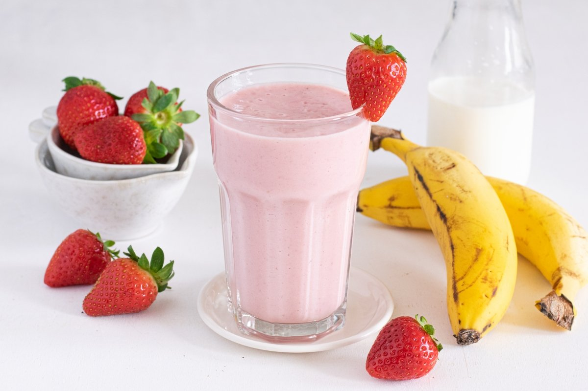

Banana and strawberry smoothie

The strawberry and banana smoothie is ideal for a snack. It couldn't be easier and faster to prepare, as well as delicious.
Ingredients for 2 rations:

350 g strawberries (2-3 strawberries)
2 bananas

250 g whole milk

Half a spoonful of sugar (optional)
Preparation:
- We clean and chop the strawberries, and put them in the blender glass.
- We chop the bananas and put them in the glass
- We grind until integrated
- We add the milk and sugar. We beat until we have a homogeneous mixture
- We serve and let's have a snack!
Recipe information:
- Preparation time:
- 10 minutes
- Rations:
- 2
- Category:
- drinks
- Type of cuisine:
- Spanish
- Calories per rations:
- 212 (kcal)